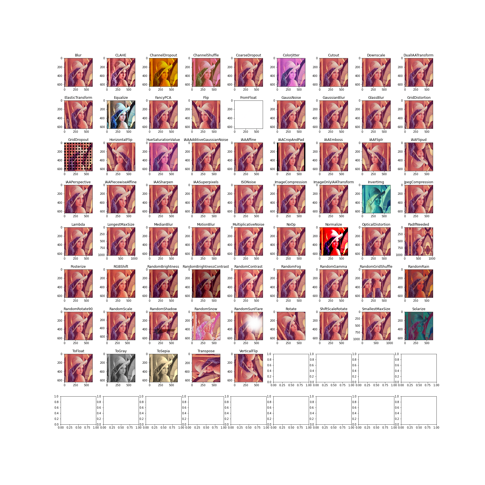
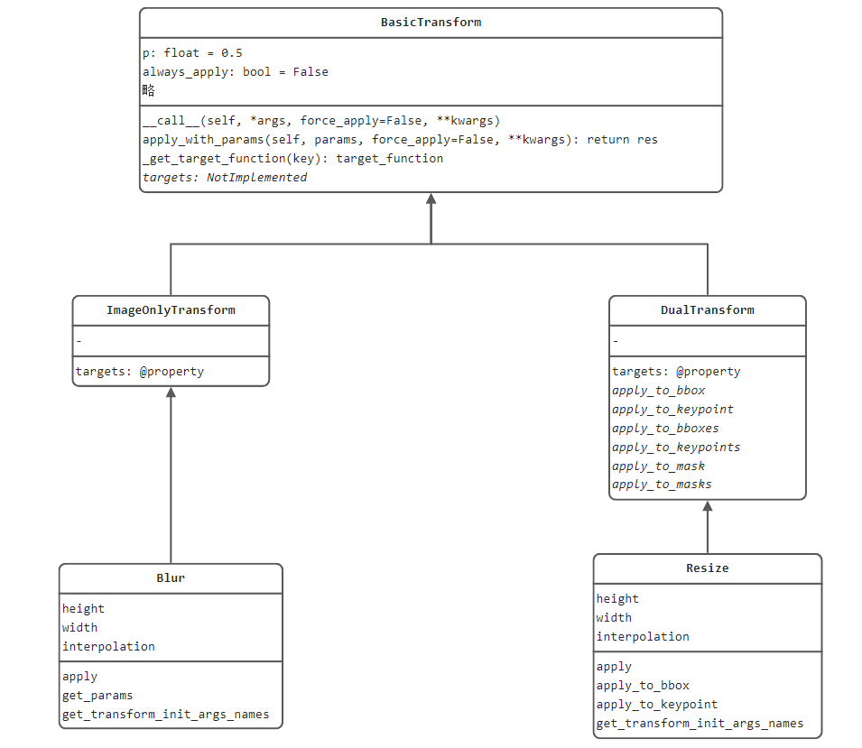

7.6 albumentations 数据增强库

本节介绍albumentations库，albumentations是强大的数据增强库，原计划在第三章中进行介绍，后因篇幅过大，放到了本章作为进阶技巧。
为什么要用albumentations？ pytorch的transforms有什么不足么？ 当然有不足了， pytorch的transforms在处理图像分割与目标检测这一类需要图像与标签同时变换的时候不方便，而albumentations提供了图像分割、目标检测等复杂任务的数据增强方法。
为什么要用albumentations？
从github中译过来：
- 支持多种任务：支持分类、语义分割、实例分割、目标检测和姿态估计等；
- 提供简洁的API：针对分割、边界框回归、关键点任务及多种数据形态（RBG-images, grayscale images, multispectral images）均可采用统一的函数完成数据增强。
- 数据增强方法多：提供超70种变换方法。
- 速度快效率高：相比其它常见数据增强库，多数方法速度都为最优
- 支持主流框架：albumentations已是pytorch生态系统的一员，可很好适配pytorch，同时支持TensorFlow中使用。
- 专家背书：albumentations的作者大多数来自工业界大牛
- 市场验证：albumentations已经被广泛应用于工业界和学术界，以及各种竞赛，并且获得了优异成绩。
albumentations有那么多优点，还不赶快来学习它。
安装
pip install -U albumentations
上手demo
定义一个Compose，内部包括多个变换方法（同transforms一样）
将compose放到dataset中，在getitem函数中实现调用
getitem中注意各变换方法的输入，由于albumentations支持多种数据同时处理，因此输入时需要指定变量。如image、mask、bboxes和keypoints之类。
经过Compose返回的数据是一个字典形式，需要根据key获取对应信息，如image、mask、bboxes和keypoints。
可以任意调整以下变换方法，以及参数设置，观察图像变化。
train_transform = A.Compose(
[
A.Resize(512, 512),
A.ShiftScaleRotate(shift_limit=0.05, scale_limit=0.05, rotate_limit=55, p=0.5),
]
)
图像-标签对的数据增强
图像分割、目标检测和关键点任务中的数据增强，需要同时对图像和标签一起变换，这也是albumentations与pytorch的transforms最大的区别。
请运行代码观察结果，这里介绍使用步骤
- dataset的getitem中将image与mask同时传入self.transfoms()中；
- 在DataLoader返回的数据中，采用key-value的形式获取image与mask/bboes/keypoints；
data_augmented = data_transform(image=image_rgb, mask=mask)
albumentations 代码结构
albumentations采用BasicTransform作为基类，再根据是否需要对标签进行变换，划分为nlyTransform 和 DualTransform
顾名思义，ImageOnlyTransform就是仅针对原图进行操作，DualTransform就是同时对原图和标签进行操作。
两种类型的变换常见的方如下：
- ImageOnlyTransform： Blur，RGBShift，RandomBrightnessContrast等
- DualTransform： Resize, Flip， Crop， Rotate，ElasticTransform等
为了分析albumentations代码结构，特地绘制了一副简略版的UML类图，再结合Resize与Blur的函数，分析albumentations代码运行结构。
在代码中通过Resize类的调试，可看到实现图像模糊的功能在apply()函数中，接下来就需要理清代码结构，寻找BasicTransform是如何调用apply()的。
通过代码单步调试，发现依次进行以下步骤：
- BasicTransform的__call__()：在89行，return时调用self.apply_with_params(params, **kwargs)
- BasicTransform的self.apply_with_params()：在100行，通过target_function = self._get_target_function(key)获得具体需要变换的函数
- BasicTransform的self._get_target_function()：在123行，通过self.targets.get()获得具体的target_function
- DualTransform的targets：是一个字典，其中定义了key与具体变换函数的映射，其中self.apply即上文提到的Resize类下的self.apply。
到这里一个具体的变换实现过程才算走完，其中BasicTransform定义了基础逻辑，例如概率选择、参数获取等，DualTransform则是定义mask,masks，bboxes，keypoints的变换函数接口，最终的实现由Resize类来完成。同理，ImageOnlyTransform 一样。
@property
def targets(self):
return {
"image": self.apply,
"mask": self.apply_to_mask,
"masks": self.apply_to_masks,
"bboxes": self.apply_to_bboxes,
"keypoints": self.apply_to_keypoints,
}

小结
本节介绍了albumentations的优点，基本使用以及代码结构，关于albumentations的70多种方法请查看附录，或者阅读文档查看API，使用方法非常简单，也可到代码中查看编写的批量数据增强代码段，实现了68个数据增强可视化
附录
albumentations提供70多种API，这里将不再一一介绍各API的参数，请查看文档即可。
整体分为两种，Pixel-Level和Spatial-Level：
- AdvancedBlur
- Blur
- CLAHE
- ChannelDropout
- ChannelShuffle
- ColorJitter
- Downscale
- Emboss
- Equalize
- FDA
- FancyPCA
- FromFloat
- GaussNoise
- GaussianBlur
- GlassBlur
- HistogramMatching
- HueSaturationValue
- ISONoise
- ImageCompression
- InvertImg
- MedianBlur
- MotionBlur
- MultiplicativeNoise
- Normalize
- PixelDistributionAdaptation
- Posterize
- RGBShift
- RandomBrightnessContrast
- RandomFog
- RandomGamma
- RandomRain
- RandomShadow
- RandomSnow
- RandomSunFlare
- RandomToneCurve
- RingingOvershoot
- Sharpen
- Solarize
- Superpixels
- TemplateTransform
- ToFloat
- ToGray
- ToSepia
- UnsharpMask
| Transform | Image | Masks | BBoxes | Keypoints |
|---|---|---|---|---|
| Affine | ✓ | ✓ | ✓ | ✓ |
| CenterCrop | ✓ | ✓ | ✓ | ✓ |
| CoarseDropout | ✓ | ✓ | ✓ | |
| Crop | ✓ | ✓ | ✓ | ✓ |
| CropAndPad | ✓ | ✓ | ✓ | ✓ |
| CropNonEmptyMaskIfExists | ✓ | ✓ | ✓ | ✓ |
| ElasticTransform | ✓ | ✓ | ||
| Flip | ✓ | ✓ | ✓ | ✓ |
| GridDistortion | ✓ | ✓ | ||
| GridDropout | ✓ | ✓ | ||
| HorizontalFlip | ✓ | ✓ | ✓ | ✓ |
| Lambda | ✓ | ✓ | ✓ | ✓ |
| LongestMaxSize | ✓ | ✓ | ✓ | ✓ |
| MaskDropout | ✓ | ✓ | ||
| NoOp | ✓ | ✓ | ✓ | ✓ |
| OpticalDistortion | ✓ | ✓ | ||
| PadIfNeeded | ✓ | ✓ | ✓ | ✓ |
| Perspective | ✓ | ✓ | ✓ | ✓ |
| PiecewiseAffine | ✓ | ✓ | ✓ | ✓ |
| PixelDropout | ✓ | ✓ | ✓ | ✓ |
| RandomCrop | ✓ | ✓ | ✓ | ✓ |
| RandomCropNearBBox | ✓ | ✓ | ✓ | ✓ |
| RandomGridShuffle | ✓ | ✓ | ✓ | |
| RandomResizedCrop | ✓ | ✓ | ✓ | ✓ |
| RandomRotate90 | ✓ | ✓ | ✓ | ✓ |
| RandomScale | ✓ | ✓ | ✓ | ✓ |
| RandomSizedBBoxSafeCrop | ✓ | ✓ | ✓ | |
| RandomSizedCrop | ✓ | ✓ | ✓ | ✓ |
| Resize | ✓ | ✓ | ✓ | ✓ |
| Rotate | ✓ | ✓ | ✓ | ✓ |
| SafeRotate | ✓ | ✓ | ✓ | ✓ |
| ShiftScaleRotate | ✓ | ✓ | ✓ | ✓ |
| SmallestMaxSize | ✓ | ✓ | ✓ | ✓ |
| Transpose | ✓ | ✓ | ✓ | ✓ |
| VerticalFlip | ✓ | ✓ | ✓ | ✓ |